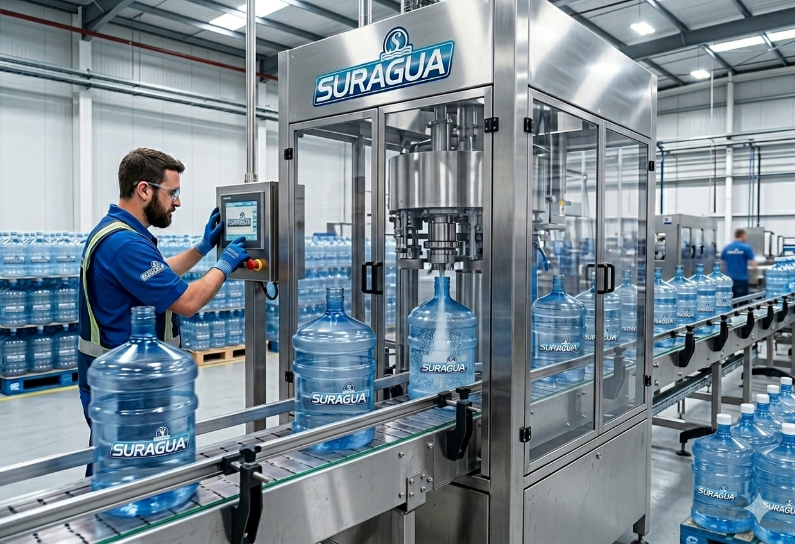

Nuestra Historia
Suragua nació en 1991 como un pequeño emprendimiento familiar con la visión de profesionalizar la distribución de agua envasada en Buenos Aires. Después de más de tres décadas, hemos crecido junto a nuestros clientes, desde las primeras entregas barriales hasta convertirnos en proveedores estratégicos de las empresas más grandes del país.

Innovación y Calidad
Nuestra planta ha sido pionera en la implementación de sistemas de filtrado y ozonización, garantizando un producto libre de impurezas. Hoy, con más de 30 años de trayectoria, seguimos manteniendo los mismos valores de confianza y puntualidad que nos dieron origen. Nuestra misión es ofrecer agua pura y segura, superando las expectativas de nuestros clientes con responsabilidad y compromiso ambiental. Buscamos ser una empresa modelo en el sector, mejorando cada día nuestros estándares de calidad. Nos guían valores sólidos: satisfacción del cliente, trabajo en equipo, responsabilidad con la salud y el medio ambiente, y compromiso con la excelencia.
